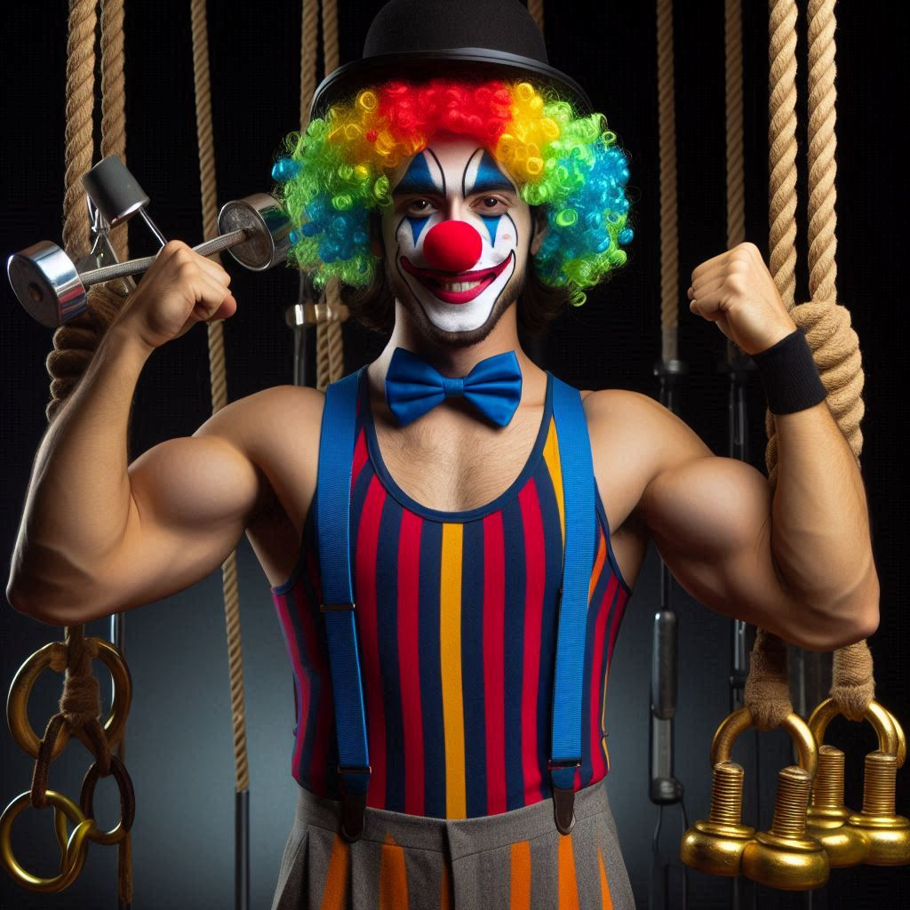
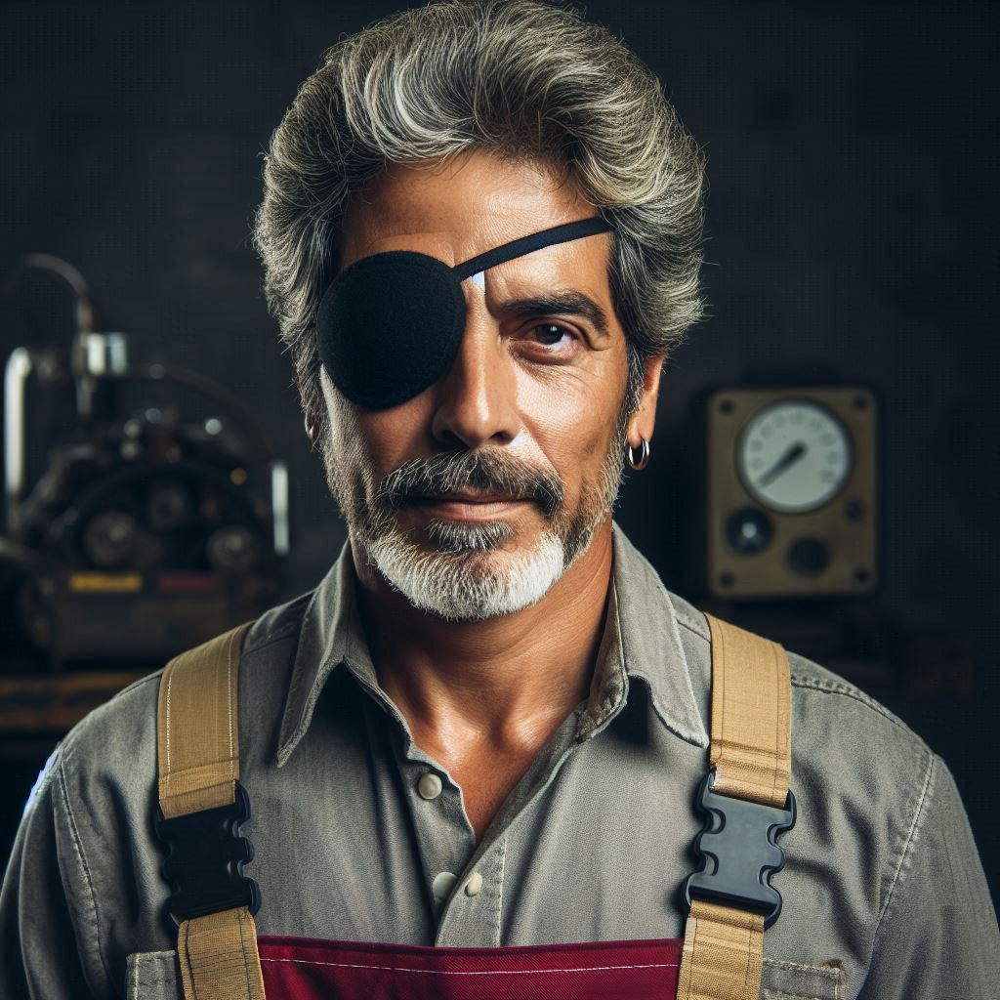
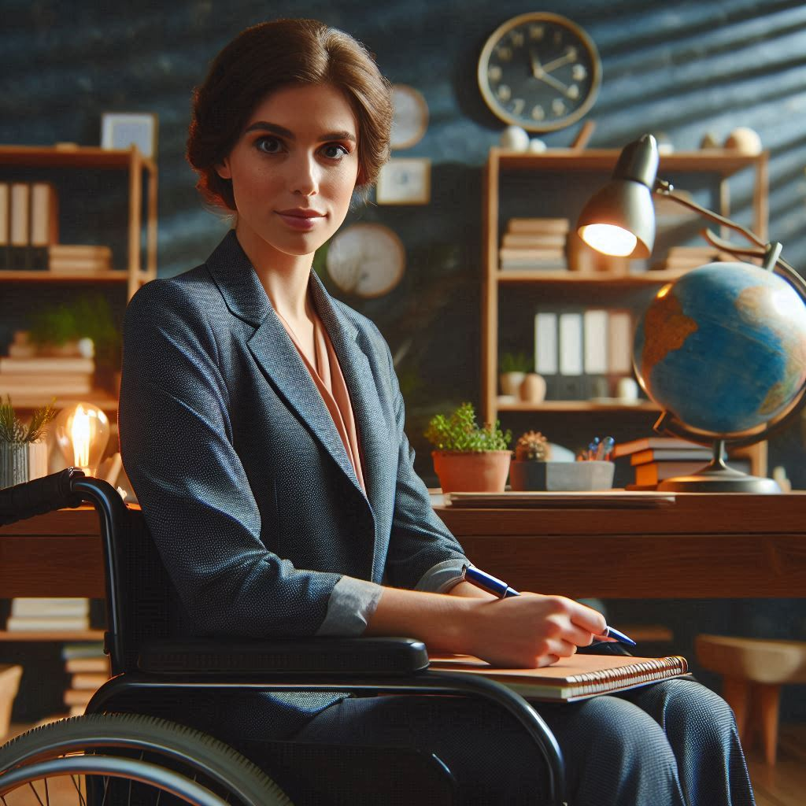

Notre équipage
Botaniste Agronome
Nous avons choisi de prendre un agronome et botaniste car il pourra nous aider à rendre les sol de Mars plus fertile avec sa spécialité dans l’agronomie. De plus sa spécialité dans la Botnie va grandement faciliter la recherche de végétaux qui sont plus propice à faire pousser sur Mars. Finalement il va pouvoir faire de la recherche pour voir s’il serait possible de faire de l’élevage. Nous pensons que son racisme et sa misogynie peut être traité grâce a la proximité qu’il auront durant les 100 jours de trajet vers mars et grâce à la microsociété qu’il vont crée
Biochimiste
Nous amenons un Biochimiste car nous voulons être capable de faire avancer la technologie martienne. Comme sa profession est d’étudier tous ce qui est microscopique et de faire avancer la médecine, agriculture ou même la biotechnologie il pourra nous aider à rendre l’agriculture plus efficace et rapide.
Clown
Nous avons choisi le clown car il peut réconforter les gens grâce à ses tours et ses blagues, mais il sera surtout utile grâce à sa force surhumaine, ce qui nous permettra de monter rapidement le camp et de transporter les cargaisons et l’équipement. Son endurance physique nous aidera à construire la base martienne et réparer le vaisseau.
Étudiante de 5e secondaire
Nous amenons une étudiante de secondaire 5 car premièrement elle à beaucoup de potentiel d’apprentissage. De plus elle est enceinte de 3 mois ce qui est un grand avantage car si un bébé nait sur Mars il sera beaucoup plus habitué et agile avec la gravité et l’atmosphère martienne. De plus une jeune a de meilleure chance de tomber enceinte.
Mécanicien
Nous avons décidé d’amener un mécanicien car il est un atout important pour la réparation des machines. Dans l’espace, il n’y a pas de Google ou de magasin de réparation. Grâce à son aide, nous pourrons réparer les machines si elles tombent en panne.
Médecin
Le médecin va pouvoir s’occuper des Soins médicaux si quelqu’un est malade ou blessé car il s’occupait probablement de ça sur la terre. Ensuite il peut aider à faire des suivis sur la santé mental ou les maladies des gens et finalement il peut faire des chirurgies si quelqu’un est vraiment blessé.
Proffesseur d'éthique et spécialiste des plantes
Nous voulons amener un spécialiste des plantes car comme dit plus tôt les plantes et l’élevage d’insecte sera notre principale source de nourritures sur Mars. Un spécialiste des plantes est donc primordial si nous ne voulons pas perdre notre seule source de plantes. De plus nous pensons qu’il est important d’avoir un Canadien dans cette mission unique.
Psychologe
Nous avons choisi la Psychologue avec un doctorat en gestion de crise car plusieurs membres de notre équipage soufre de trouble mentaux et ne pourraient pas s’endurer sur Mars si personne n’ait présent pour les résonner et leur donner du support pour régler leur problème. De plus un voyage sur Mars ne sera pas sans péripétie et peut être qu’un membre de notre équipage va vivre une crise de panique et aura besoin de psychologue.